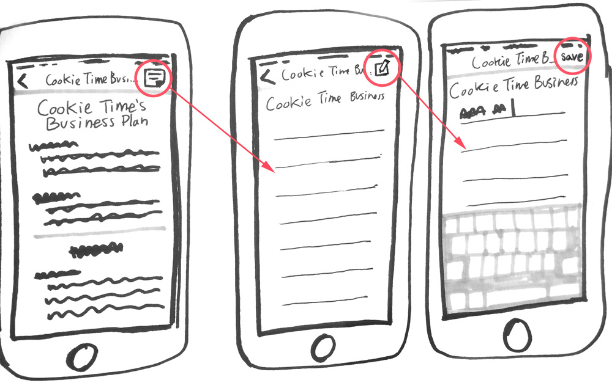

Centro Community Partners
About
Centro Community Partners mission is to help communities grow by matching small business entrepreneurs with volunteer business advisors. They came to our team for a mobile app to improve advisor's communication with their clients and improve advisor efficiency. The goal was to create an app that could be integrated with their existing Business Planning Tool. We created a concept that would include real time updates of their entrepreneur's progress, the ability to create notes on their work, and messaging features.
Process
We spent time learning about our client's needs and interviewing business advisors who would be using the app. Through this process we uncovered the following pain points:
- Lack of knowledge of when clients made changes to their business plan - this meant that advisors were sometimes ill prepared for advising sessions and unaware of whether clients were keeping up with their work
- Disorganized communications - Advisors were following up with their clients through emails, texts and other messages. This made it hard for them to refer back to messages or know whether messages were recieved.
- Need for constant reminders - Advisors need to remind their clients of appointments, but would sometimes forget. There was also a problem of reminder messages getting lost in clients' inboxes.
We then moved on to sketching to begin generating and testing ideas. I tackled the app dashboard, which would contain the main navigation, as well as a feature that would allow advisors to create notes about their client's business plan
Dashboard Sketches
Note Flow Sketches
